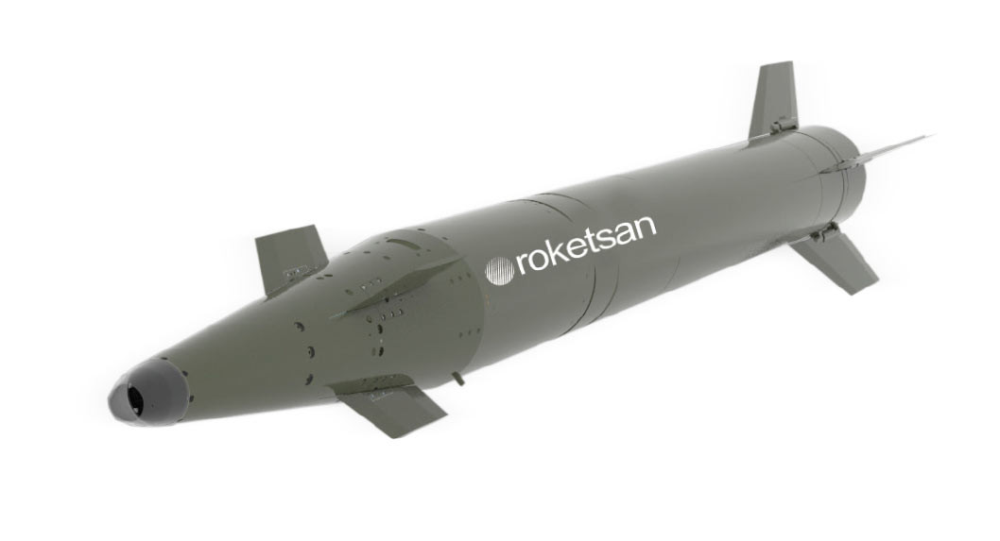
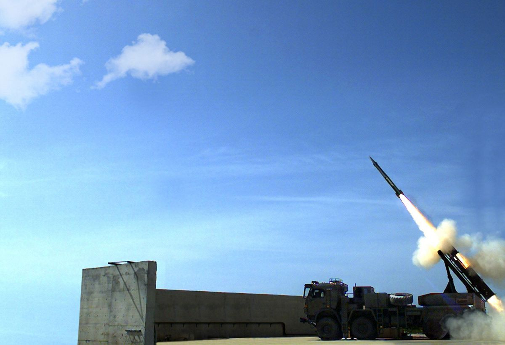
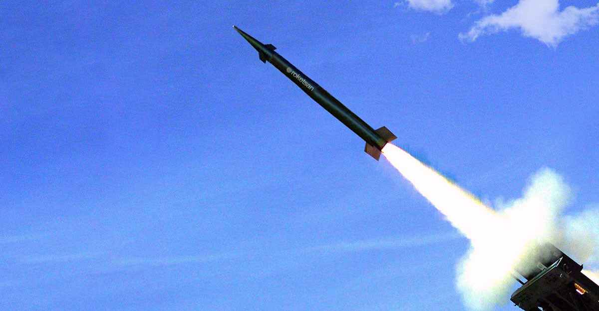

230 mm Lazer Güdümlü Füze
TRLG-230, yüksek öncelikli hedeflere karşı orta menzilde nokta vuruş kabiliyeti sağlamak üzere geliştirilen lazer güdümlü füzedir. TRG-230 ailesinin lazer arayıcı başlıkla hassaslaştırılmış üyesi olarak, klasik koordinat güdümlü atışlara göre özellikle terminal safhada daha yüksek doğruluk sağlar.
Füze, ataletsel güdüm yöntemleriyle hedef bölgesine yaklaşır; terminal fazda ise lazer arayıcı başlığını kullanarak işaretli hedefe hassas angajman gerçekleştirir. Bu yapı, sabit hedeflerin yanı sıra uygun şekilde işaretlenebilen zaman kritik ve hassas hedeflere karşı da etkili kullanım sağlar.
TRLG-230; ROKETSAN tarafından geliştirilen Çok Namlulu Roket Atar Silah Sistemi ile ve uygun arayüzlere sahip farklı tipte platformlarla kullanılabilecek şekilde tasarlanmıştır. Elektronik harp dayanımı, görev başarımı ve fırsat hedeflerine kullanım kolaylığı öne çıkan yönlerindendir.
20–70 km
3.4 m
230 mm
215 kg
≤ 2 m
ÇNRA / Uyumlu Araçlar
| Mühimmat Tipi | 230 mm lazer güdümlü füze |
| Adı | TRLG-230 |
| Görev Alanı | 20–70 km menzilde yüksek öncelikli hedeflere hassas ve etkili ateş desteği |
| Menzil | 20–70 km |
| Uzunluk | 3.4 m |
| Çap | 230 mm |
| Ağırlık | 215 kg |
| Güdüm | GPS destekli ataletsel güdüm + lazer güdüm |
| Terminal Faz | Lazer arayıcı başlık ile nokta vuruş kabiliyeti |
| Harp Başlığı | Çelik bilyeli yüksek infilaklı harp başlığı |
| Doğruluk | ≤ 2 m |
| Atış Platformu | ROKETSAN Çok Namlulu Roket Atar Silah Sistemi ve uygun arayüzlü diğer platformlar |
| Hedefe Yaklaşım | Önce ataletsel yaklaşma, ardından lazer işaretli hedefe terminal yönelim |
| Elektronik Harp Dayanımı | Elektronik harp dayanımı öne çıkarılan yapı |
| Kullanım Kolaylığı | Fırsat hedeflerine karşı kolay kullanım |
| Öne Çıkan Özellik | 70 km sınıfında lazer arayıcıyla nokta vuruş sağlayan yerli topçu füze çözümü |
| Nokta Vuruş | Terminal fazda lazer işaretli hedefe yüksek hassasiyetli angajman |
| Yüksek Öncelikli Hedefler | Stratejik ve taktik önemi yüksek hedeflere yoğun ve etkili ateş gücü |
| Fırsat Hedefleri | Anlık ortaya çıkan ve lazerle işaretlenebilen hedeflere karşı kullanım kolaylığı |
| Görev Başarımı | Yüksek doğruluk sayesinde görev başarımını artıran kullanım konsepti |
| Düşük Yan Hasar | Yüksek hassasiyet nedeniyle collateral damage azaltımına katkı |
| Maliyet Etkinliği | Orta menzilde hassas topçu ateşi için maliyet etkin yerli çözüm |
| Birlik Desteği | Manevra birliklerine zamanında ve etkili ateş desteği |
| Radar ve Sensörler | Hava savunma radarları ve işaretlenebilen sensör hedefleri |
| Komuta Merkezleri | Kritik komuta-kontrol tesisleri |
| Topçu ve Füze Unsurları | Yüksek öncelikli ateş destek sistemleri ve benzeri hedefler |
| Zırhlı / Hareketli Hedefler | Lazerle işaretlenebilen hareketli veya sabit hedefler |
| Lojistik Hedefler | İkmal, depo ve destek altyapıları |
| Fırsat Hedefleri | Görev sırasında oluşan ve hızlıca işaretlenebilen hassas hedefler |
| Ana Fırlatma Sistemi | ROKETSAN Çok Namlulu Roket Atar Silah Sistemi |
| Diğer Platformlar | Uygun arayüzlere sahip farklı tipte kara platformlarına entegrasyon |
| Topçu Ailesi İçindeki Yeri | TRG-230 ailesinin terminal hassasiyet artırılmış lazer güdümlü varyantı |
| Konsept | Orta menzilde lazer işaretli hassas hedeflere karşı güdümlü topçu çözümü |


